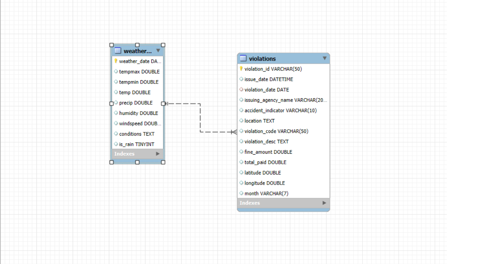
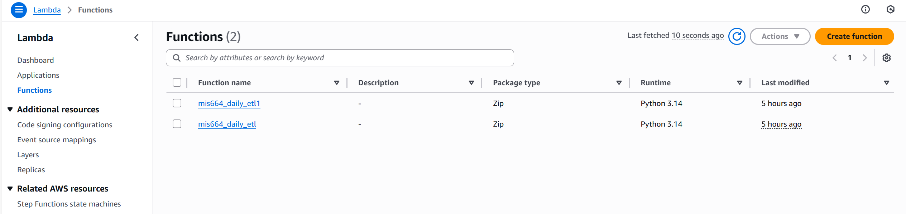
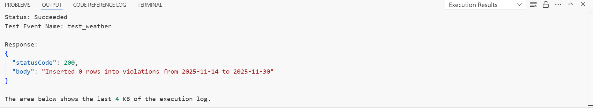
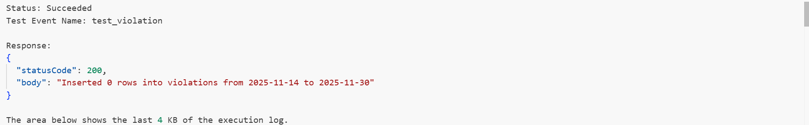
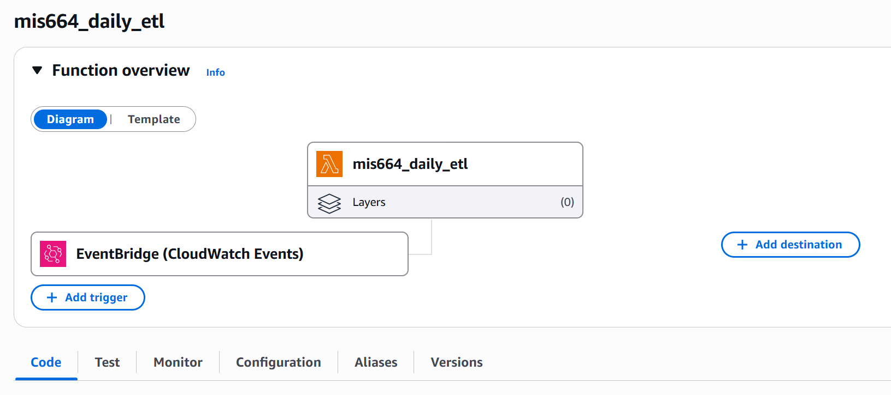
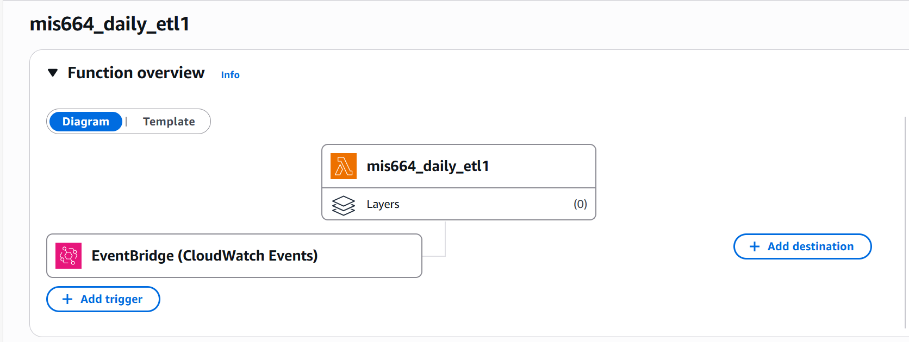
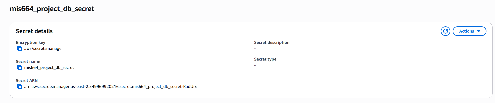
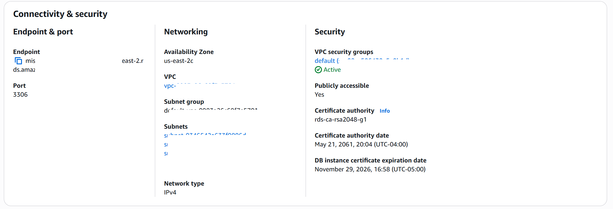
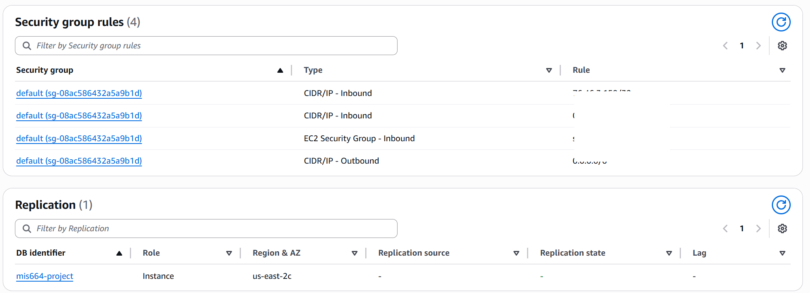

1) Introduction
This project builds a complete, repeatable, and automated ETL pipeline that integrates District of Columbia Moving Violations data and Daily Weather data into a MySQL database hosted on AWS RDS.
The goal is not analytics. The goal is a robust cloud data storage and update environment that enables accurate downstream analysis later (without manual refresh, duplicate inserts, or exposed credentials).
- MySQL schema + ERD design
- Table creation SQL + primary key strategy
- Python ETL (local full load + AWS Lambda incremental load)
- Automated daily scheduling via EventBridge
- Secure credential handling via Secrets Manager
- Cloud database hosting on AWS RDS
- Duplicate-safe ingestion (no repeated inserts)
2) Data Sources
2.1 Moving Violations (District of Columbia Open Data)
- Dataset: Moving Violations Issued (JSON API with pagination)
- Updated daily
- Primary key:
violation_id - Key fields: issuing agency, fine amount, violation time, coordinates, description, accident indicator
2.2 Weather (VisualCrossing Daily Weather)
- Daily weather ingestion (limited free tier often requires day-by-day pulls)
- Primary key:
weather_date - Key fields: precipitation, max/min temperature, humidity, wind speed, conditions, rainfall indicator
3) Evidence Gallery (Click any image to zoom)
The screenshots below document the deployed pipeline components and operational proof (schema, Lambda runs, scheduling, and cloud security configuration).

MySQL schema linking weather and violations with clear keys to support future joins.

Two serverless functions for incremental ingestion of weather and violations datasets.

Run proof showing ingestion behavior and safe insert logic for daily weather updates.

Run proof for violations ingestion with primary-key checks to prevent duplicates.

Automated daily schedule triggering the weather ETL Lambda function.

Automated schedule for the violations ETL Lambda function (no manual refresh needed).

Database credentials stored securely—no hardcoded secrets inside Lambda packages.

RDS endpoint and VPC networking configuration supporting controlled access.

Inbound/outbound rules governing database access and service communication paths.
4) Results & Outcomes
- Automated daily ETL for both datasets using EventBridge + Lambda
- Cloud-hosted relational storage on AWS RDS (MySQL)
- Secure credential handling through AWS Secrets Manager
- Incremental load design that avoids duplicate inserts
- Reproducible pipeline setup enabling reliable downstream analysis later
This project demonstrates cloud data engineering fundamentals: schema design, serverless compute, scheduling/orchestration, and security-first credential management.